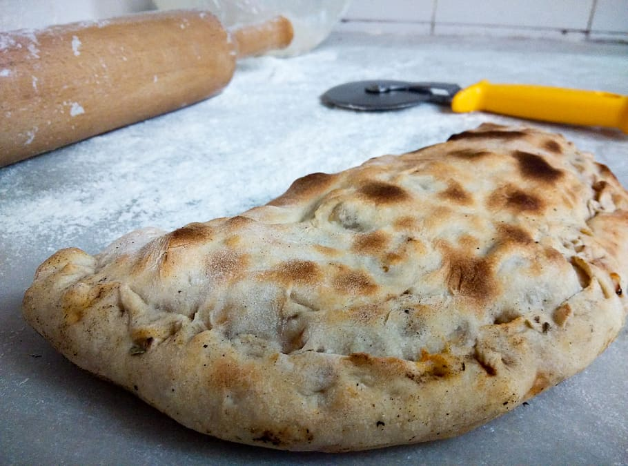

Calzone Buffalo Chicken  Photo: from lukeybear2007 allrecipes.com
Perfect Pancakes Photo by: Dotdash Meredith Food Studios(allrecipeshome)
Grape Expectations: Classic Turkish Dolma Recipe Image by Kamran Aydinov on Freepik (www.freepik.com)
Summer Sangria Photo: Divya Thakur / CC BY-SA 2.0